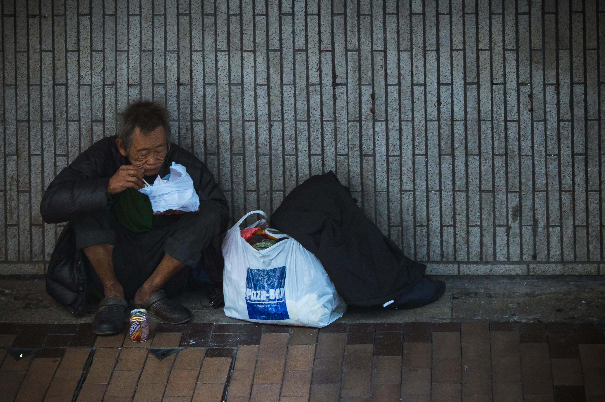

Nossos Projetos Sociais
Desenvolvemos diversos projetos que impactam positivamente a vida de milhares de pessoas. Cada projeto é cuidadosamente planejado e executado com foco em resultados concretos e transformação social.
Educação para Todos

Descrição do Projeto
Oferecemos reforço escolar, aulas de informática e atividades culturais para crianças e adolescentes em situação de vulnerabilidade social. O projeto atende 300 alunos de 6 a 15 anos.
Objetivos
- Melhorar o desempenho escolar dos participantes
- Reduzir índices de evasão escolar
- Promover inclusão digital
- Desenvolver habilidades socioemocionais
Resultados
Em 2024, alcançamos 85% de aprovação escolar entre os participantes e redução de 60% na evasão escolar nas comunidades atendidas.
Como Contribuir
Você pode ser voluntário como professor de reforço, doar materiais escolares ou contribuir financeiramente para manutenção das atividades.
Saúde na Comunidade

Descrição do Projeto
Realizamos campanhas de saúde preventiva, atendimento médico básico e distribuição de medicamentos para comunidades sem acesso adequado a serviços de saúde. Atendemos cerca de 500 pessoas mensalmente.
Objetivos
- Promover saúde preventiva
- Realizar diagnósticos precoces
- Orientar sobre hábitos saudáveis
- Facilitar acesso a tratamentos básicos
Resultados
Mais de 6.000 atendimentos realizados em 2024, com identificação e encaminhamento de 200 casos que necessitavam tratamento especializado.
Como Contribuir
Profissionais de saúde podem se voluntariar para atendimentos. Também aceitamos doações de medicamentos e equipamentos médicos.
Capacitação Profissional
Descrição do Projeto
Oferecemos cursos gratuitos de capacitação profissional em diversas áreas como informática, administração, gastronomia e artesanato. O projeto já formou mais de 1.000 pessoas.
Objetivos
- Inserir pessoas no mercado de trabalho
- Desenvolver habilidades técnicas
- Promover empreendedorismo
- Aumentar renda familiar
Resultados
70% dos formandos conseguiram emprego ou iniciaram negócio próprio em até 6 meses após conclusão do curso.
Como Contribuir
Empresas podem oferecer instrutores voluntários ou vagas de emprego. Pessoas físicas podem doar equipamentos ou recursos para os cursos.
Combate à Fome

Descrição do Projeto
Distribuímos cestas básicas e refeições prontas para famílias em situação de insegurança alimentar. Atendemos 200 famílias semanalmente.
Objetivos
- Garantir alimentação adequada
- Combater desnutrição infantil
- Apoiar famílias em crise
- Promover educação nutricional
Resultados
Distribuição de 10.000 cestas básicas e 50.000 refeições em 2024, beneficiando diretamente 800 pessoas.
Como Contribuir
Aceitas doações de alimentos não perecíveis, recursos financeiros para compra de cestas e voluntários para organização das distribuições.
Como Doar
Sua doação é fundamental para mantermos nossos projetos ativos e ampliarmos nosso impacto social. Oferecemos diversas formas de contribuição.
Doações Financeiras
Doação Única
Faça uma doação pontual de qualquer valor. Toda contribuição é bem-vinda e faz diferença em nossos projetos.
Doação Recorrente
Torne-se um doador regular e ajude-nos a planejar melhor nossas ações. Você pode contribuir mensalmente a partir de R$ 20,00.
Dados Bancários
Banco: 001 - Banco do Brasil
Agência: 1234-5
Conta Corrente: 12345-6
CNPJ: 12.345.678/0001-90
Favorecido: ONG Ação Social

Doações de Materiais
Itens Aceitos
- Alimentos não perecíveis
- Roupas e calçados em bom estado
- Livros e materiais escolares
- Brinquedos
- Móveis e eletrodomésticos funcionando
- Computadores e equipamentos eletrônicos
Local de Entrega
Rua das Flores, 123 - Centro - São Paulo/SP
Horário: Segunda a Sexta, das 8h às 18h
Telefone: (11) 1234-5678
Para doações maiores, oferecemos serviço de coleta. Entre em contato para agendar.

Empresas Parceiras
Sua empresa pode se tornar parceira da ONG Ação Social através de:
- Doações financeiras com incentivo fiscal
- Programas de voluntariado corporativo
- Doação de produtos e serviços
- Patrocínio de projetos específicos
- Campanhas de arrecadação com colaboradores
Entre em contato com nosso departamento de parcerias para conhecer as oportunidades de colaboração.